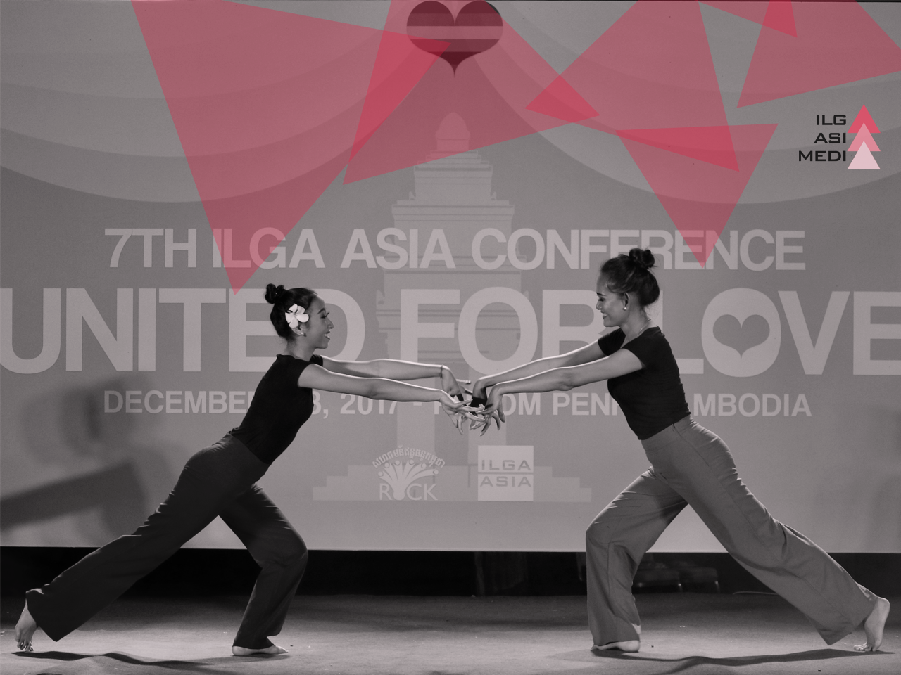

ILGA - THE INTERNATIONAL LESBIAN, GAY, BISEXUAL, TRANS AND INTERSEX ASSOCIATION is the world federation of national and local organisations dedicated to achieving equal rights for lesbian, gay, bisexual, trans and intersex (LGBTI) people across the globe. Established in 1978, ILGA enjoys consultative status at the UN Ecosoc Council. It speaks and lobbies in international fora on behalf of more than 1,200 member organisations from 132 countries. 
ILGA Asia is the Asian Region of ILGA, representing more than 100 member organizations in Afghanistan, Bahrain, Bangladesh, Bhutan, Brunei Darussalam, Cambodia, China, Democratic People’s Republic of Korea, India, Indonesia, Islamic Republic of Iran, Iraq, Israel, Japan, Jordan, Kuwait, Lao People’s Democratic Republic, Lebanon, Malaysia, Maldives, Mongolia, Myanmar, Nepal, Oman, Palestine, Pakistan, Philippines, Qatar, Republic of Korea, Saudi Arabia, Singapore, Sri Lanka, Syrian Arab Republic, Taiwan, Thailand, Timor-Leste, United Arab Emirates, Viet Nam and Yemen.